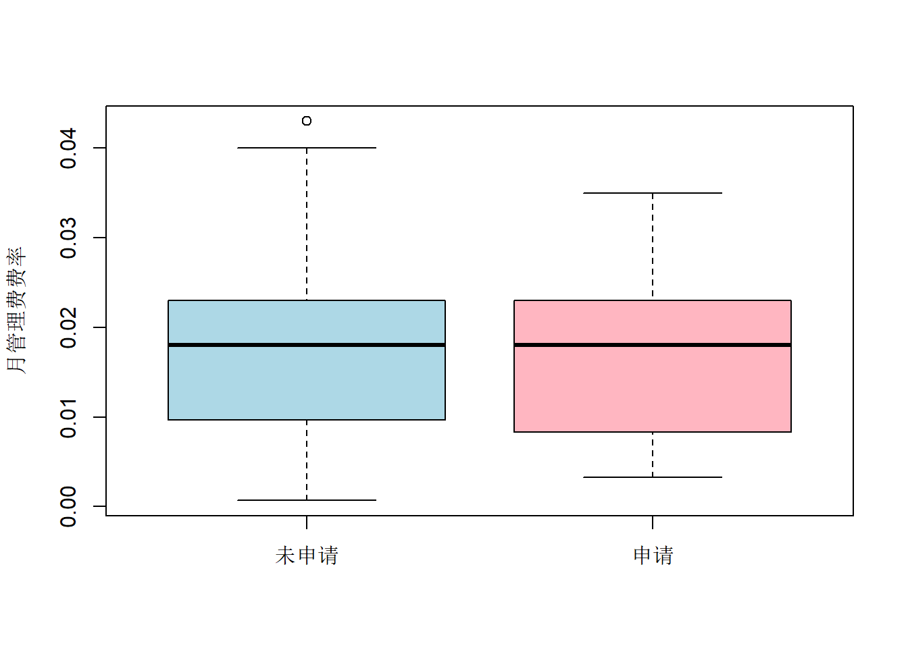

第 8 章 TASK 6 分类问题
8.1 学习资料
在这个TASK,我们尝试针对离散型因变量建立模型，这属于分类问题。当离散型因变量只有两个可能的取值（例如性别有’男’和’女’这两个取值）时，这就是一个’二分类’问题，也是这个TASK的学习重点。
我们给出更多的二分类问题的例子。在消费者购买决策的研宄中，消费者的决策有两个可能的结果：‘购买’和’不购买’；在病人的癌症诊断过程中，诊断的结果有两个可能的取值：“得癌症”和“不得癌症”；在申请贷款的审批流程中，审批的结果有两个可能的取值：“审批”和“不审批”。
二分类问题的因变量Y，惯例上取值为0和1（0和1只是数字符号，并不支持代数运算）。如果继续沿用线性模型，那么 \(Y = \beta_0 + \beta_1 X + \epsilon\)（假设只有一个自变量）。线性回归模型并非不可行，最小二乘估计依然能够获得。其实，很多实际数据分析经常简单粗暴地采用线性回归模型来处理二分类问题。但是，细心的读者能够发现，理论上这个模型的左右两边并不等价。我们在这个TASK将要介绍两类模型（逻辑回归和决策树），用于解决二分类问题。
8.1.1 逻辑回归模型
逻辑回归模型并不直接对因变量Y进行建模，而是对\(Y = 1\)的可能性（概率）建立模型。具体地，\[P(Y = 1) = \frac{exp(\beta_0 + \beta_1 X)}{1 + exp(\beta_0 + \beta_1 X)}\] 这个函数叫做Logistic函数，所以这个回归模型又叫做逻辑回归。关于逻辑回归，我们需要关注这样几个点。
odds的概念：odds是可能性的一种度量，即：\(P(Y=1)/P(Y=0)=exp(\beta_0+\beta_1 X)\)。这个量是“因变量为1的概率”与“因变量为0的概率”的比值。
log-odds的概念：log-odds是对odds取对数，这个变换也叫作logit变换，即：\[log\frac{P(Y=1)}{P(Y=0)}=\beta_0+\beta_1 X\]这个量，恰好是自变量的线性组合。在线性回归模型当中，自变量的线性组合（加上误3．差项）就是因变量。在逻辑回归模型当中，自变量的线性组合就是log-odds。
系数的估计与解读：逻辑回归的系数估计，不再是最小二乘估计，而是要使用极大似然估计（MLE）。我们不去关心系数估计的理论性质，感兴趣的读者可以阅读广义线性模型的经典书籍。假设己经得到了系数估计，\(\hat\beta_1=3\)，常见的有这样三个层面的解读。
只关心系数估计的正和负。如果系数估计为正，说明相应的自变量的增加（控制其他因素不变），会导致Y=1的可能性的增加：相反，如果系数估计为负，说明相应的自变量的增加（控制其他因素不变），会导致Y=0的可能性的增加。当然，系数估计必须显著（相应的p值小于给定的显著性水平），我们才对其进行解读。
关心odds的变化。之前介绍了什么是odds，以此为基础，还有odds ratio，即两个odds的比：\[\frac{P(Y'=1)}{P(Y'=0)} \frac{P(Y=0)}{P(Y=1)}=\frac{exp(\beta_0+\beta_1 X')}{exp(\beta_0+\beta_1 X)}=exp(\beta_1 X'-\beta_1X)\]那么，\(\hat\beta_1=3\)可以解读为，自变量增加一个单位，odds ratio增加\(exp(\hat\beta_1)=20\)倍。
关心log-odds的变化。log-odds是自变量的线性组合，因此，系数估计还可以解读为，自变量增加一个单位，log-odds增加3个单位。
8.2 题目
这个TASK，我们自学分类问题的建模（可能很多同学在学校没学过这部分知识，自学十分有挑战）。学习材料主要讲述了逻辑回归与决策树的知识，请你仔细阅读。另外，公众号熊大的数据价值回归系列，0-1回归部分，有非常精彩的讲解，请大家认真学习。在学习完这些材料之后，尝试完成作业。具体要求如下。
继续使用TASK 3的消费金融数据。
将原来的因变量【申请人数】做如下处理，如果申请人数是0，保持不变；如果申请人数大于0，处理成1。新生成的这个因变量就是【是否有人申请】。
以是否有人申请为因变量，自己尝试构造有意义的自变量。分别建立逻辑回归模型和决策树模型，理解什么样的产品有人申请。注意，原始数据的很多变量不适合直接做自变量，你需要有理有据地自己构造【有意义的】自变量。
形成一份PDF报告。报告主要由4部分组成：
4.1 一个段落的文字，简单陈述背景和研究问题（注意这个TASK的因变量是0-1类型的）。
4.2 两页左右的篇幅，进行简单的描述分析（注意，因变量是0-1，请选择适合的统计图表进行描述）。无需报告数据说明表，因为没有那么多篇幅了。有逻辑地组织好你的描述分析。
4.3 三页左右的篇幅，报告逻辑回归以及决策树的估计结果、解读、以及预测精度。认真看学习材料，谁敢直接截图代码结果我就直接淘汰你！注意，认真解读结果，我要你有思考的解读！！！再注意，不要出现任何公式，也不要介绍方法和原理，我比你清楚！
4.4 用几个段落说明，两个方法的结果比较。选择一个角度，说明一下你准备采用哪个方法。注意，时刻记住你的研究目的是什么。
提交一份6页的PDF文件（超页说明你废话多，页数少说明没认真写）。写上报告题目！！！宋体，小四号字体，1.5倍行距。排版整齐。提交之前仔细阅读，避免语病和错别字。我要正式一点的报告，谁再写口语化的、推文风格的报告，我就罚你给狗熊会写一年推文！
DDL：2018年8月2日晚24:00. 7. 别问我写这个行不行，写那个行不行，是不是应该这么写那么写，这不是证明题，没有标准答案！把我当成你的客户、你的老板，站在读者的角度想想什么样的报告会让人眼前一亮！注意，给你3天时间，是让你认真学习仔细打磨报告的。不是让你玩2天拖到最后1天赶一个仓促的报告。
8.3 影响消费贷款有效性的因素分析
8.3.1 背景与研究问题
消费金融作为一种提供消费贷款的现代金融服务方式，正在高速地渗透进人们的日常生活中。数据显示，2017年我国互联网消费金融的交易规模从60亿元猛增到3625亿元，其规模呈现爆发式增长意味着消费金融产品的数量和种类也相应急剧增长。然而，质量并不一定和数量正相关，消费金融产品良莠不齐，有些贷款收到广泛申请客户的钟爱，而有些产品自从发行以来根本没有吸引任何申请客户。为了保证消费金融市场健康、稳定、高效地发展，如何制定出真正有效的、可以吸引申请客户的贷款产品成为各消费金融公司关注的核心问题。
本案例使用了1046家消费金融公司所发放的，贷款金额为10万元、还款期限为12个月的消费贷款明细数据，包括审批时间、担保方式等7个借贷变量，月供、还款总费用等4个还贷变量，以及贷款申请人数变量。其中，因变量为申请人数，当申请人数为0时，代表该贷款没有客户申请，是无效的；当申请人数大于0时，代表实际的申请人数。由此，将因变量处理成0-1变量，即相应贷款是否有人申请，将该变量定义为贷款产品的有效性，通过后续建模挖掘影响贷款产品有效性的重要因素。
8.3.2 描述性分析
借贷变量包括城市、审批时间、放款日期、担保方式、期限最高与最低范围和申请条件。首先将城市变量分为两类：北上广深四个一线城市和其他非一线城市。

由图1可以看出一线城市的贷款产品有效性更高，因此初步判定城市会对消费金融产品的有效性产生影响。由图2可以看出，信用贷的担保方式有效性更高，由于其他三种担保方式的样本量远小于信用贷，可以得出初步结论：担保方式可能对贷款产品有效性有影响，然而，这种影响也可能是由于数据本身的样本量差异形成的。
审批时间和放款日期的总和表示从申请人发出申请至发放贷款的总时长，将二者的和定义为等待时间。由图3则可以看出，有效的贷款产品在申请人发出申请后的平均等待时间（中位数）要明显高于无效的贷款产品，说明客户更青睐具有严格的审批流程与放贷规则的产品，因此，初步认为等待时间对贷款产品有效性有影响。

还贷变量包括月供、还款总费用、月管理费和还款方式。由图4可以看出，有效和无效贷款产品的月供平均水平（中位数）差异并不明显；图5和图6显示，其不同月管理费率和不同总费用的贷款有效性差异也十分微小，初步结论为：月供、月管理费费率和还款总费用可能不影响贷款产品有效性，但是还需要借助后续建模结果进行定量判断。
由图7可以看出，月管理费类型中收取月管理费的产品有效性更高，但是其样本量大于参考月利率收费类型的样本量，并且远大于一次性收费类型的样本量，因此月管理费类型对与贷款的有效性影响也可能是由于数据本身的样本量差异形成的。由图8则可以看出，分期还款的产品有效性最高，但是到期还款和随借随还的产品样本量远小于分期还款的产品，因此，这种影响也可能是由于数据量的差异形成的。
通过对数据的描述性分析，本案例认为贷款产品的借贷变量（包括城市、等待时间和担保方式）和还贷变量（包括月供、还款总费用、月管理费类型、月管理费费率和还款方式）都可能会影响贷款产品的有效与否。为了深入挖掘影响贷款产品有效性的显著因素，本案例将建立影响有效性因素的逻辑回归模型（使用AIC标准选择模型）和决策树模型，并综合模型的复杂程度和预测精度，选择最有利于预测贷款产品有效性的统计模型。
8.3.3 模型建立与选择
8.3.3.1 逻辑回归模型
表1展示了AIC模型的回归结果。
| 变量 | 系数估计 | p值 | 备注 |
|---|---|---|---|
| 截距项 | -21.851789 | 0.033589 | NA |
| 一线城市 | 0.420865 | 0.002845 | 基准值：非一线城市 |
| 月供 | 0.002316 | 0.058691 | NA |
| 还款总费用 | -1.754429 | 0.089953 | NA |
| 担保方式–抵押贷 | 1.238128 | 0.308079 | 基准值：担保贷 |
| 担保方式–信用贷 | 1.801066 | 0.131809 | NA |
| 担保方式–自由选 | 0.504714 | 0.690626 | NA |
| 放款日期 | -0.120479 | 0.01399 | NA |
| 审批时长 | 0.321546 | <0.001 | NA |
| 期限最高范围–18个月 | 0.221104 | 0.680911 | 基准值：12个月 |
| 期限最高范围–24个月 | 0.00529 | 0.986929 | NA |
| 期限最高范围–36个月 | 0.787114 | 0.005764 | NA |
| 期限最高范围–48个月 | 1.129317 | 0.001629 | NA |
| 期限最高范围–60个月 | 0.982672 | 0.050331 | NA |
| 期限最高范围–120个月 | 1.139409 | 0.077782 | NA |
| 期限最高范围–360个月 | -0.773112 | 0.570084 | NA |
从估计结果来看，在0.05的显著性水平下，可得出以下结论：若控制其他影响因素不变，
（1）对于城市因素而言，一线城市的贷款产品被申请的可能性更大，这说明在北上广深发行的贷款产品更加有效，容易吸引客户；
（2）对于放款日期而言，时间越短，产品的有效性越高；对于审批时长而言，审批时间长的更有可能被申请；这说明具有严格的审批流程，同时具有高效的放款流程的贷款更可能收到青睐。
（3）对于还款期限而言，最高范围为4年的贷款最有效，其次是1年的，最难吸引申请客户的是最高期限范围为3年的产品，这说明还款期限的上限给潜在客户带来的心理预期对产品有效性是有影响的。
使用该模型进行预测，选定样本的有效比例62%为阈值，产生的混淆矩阵如表2所示。据此计算出来的错分率、TPR和FPR分别是36.2%、69.2%、45.1%。
## predict
## real 0 1
## 0 217 178
## 1 200 4498.3.3.2 决策树模型
图9展示了决策树模型的估计结果。从决策树的第一层节点（担保方式）来看，非信用贷类型的产品进入了图的左侧，而左侧的第二层节点告诉我们，在担保贷、抵押贷和自由选三种担保方式下，月供大于9791元的贷款产品是更有可能被人申请（有效的）的产品，这说明当提供要求的抵押物或由第三方提供担保时，每个月还款总额越高，才能越早赎回抵押物，解除第三方的担保风险，因此月供较高的产品更吸引潜在申请人。进一步看决策树的右侧，审批时间超过1.5天，并且月管理费费率小于0.66%的产品是大概率有效的，严格的审批流程和较低的费率当然是申请人较为青睐的。还款的期限范围会对人们的心理预期产生影响，中间的第三个节点表示，期限最高范围在2年之内的贷款是没有人申请的，而最高范围大于2年并且还款总费用小于5700元的产品很可能是有效的；同样地，期限最低范围大于3个月（第六个节点）也会大概率提高产品的有效性。这说明，当还款期限的最高、最低范围都较大时，人们对于自己的还款能力更有把握，从而更可能选择这样的贷款产品。此外，一个有趣的现象是，信用贷产品的月供金额在9016至10000元时更可能被申请，较为明确的月还款范围可能和10万元贷款申请人的平均收入水平有关。

同样地，选定样本的有效比例62%为阈值，用决策树模型预测产生的混淆矩阵如表3所示。据此计算出来的错分率、TPR和FPR分别是29.2%、78.4%、41.8%。
## predict
## real 0 1
## 0 230 165
## 1 140 5098.3.3.3 模型的比较与选择
根据两个模型的评价指标，决策树模型的错分率和FPR更小，且TPR更大，说明其预测的精度比逻辑回归模型（AIC标准）更高。绘制两个模型的ROC曲线（图10和图11），得到AIC模型的AUC值为0.678，决策树模型的AUC值为0.732，说明决策树模型的预测能力更好。
因此，综合考虑模型的预测精度指标和整体预测能力，选择决策树模型来预测一种贷款产品的有效性（是否有人申请）更佳。
8.4 代码
###加载需要的程序包###
library(data.table)
library(vcd)
library(pROC)
library(rpart)
library(rattle)
library(magrittr)
library(dplyr)
rm(list = ls()) #清除工作环境
dat0 <- read.csv("task_3.csv") #读入数据，命名dat0
dat1 <- dat0 #备份数据，命名dat1
dat1$apply[which(dat1$apply > 0)] <- 1 #因变量设置为0-1
n <- nrow(dat1) #数据量n
###将管理费类型和费率解析###
split_fee <- as.data.frame(tstrsplit(dat1$monthly_fee, " ")) #按照空格将费用类型和费率分别提取出来
colnames(split_fee) <- c("fee_type","fee_rate") #数据框重命名
dat1 <- cbind(dat1, split_fee) #合并数据框
#转换费率类型
trans <- c()
trans <- as.data.frame(matrix(lapply(split_fee[,"fee_rate"], function(x) as.numeric(sub("%", "", x))/100)))
split_fee$fee_rate <- as.numeric(trans$V1) #把管理费率从字符型百分数转化成数值型
dat1 <- dat1 %>% select(-monthly_fee) #从原数据框删除解析前的一列
dat1 <- cbind(dat1, split_fee) #合并新的数据框
###将城市划分为一线和非一线###
dat1$city_flag <- "非一线"
dat1[city %in% c("北京","上海","广州","深圳"), city_flag := "一线"]
###棘状图###
city_spine <- table(dat1$city_flag, dat1$apply)
spine(city_spine, main = "城市因素", ylab = "是否申请")
fee_type_spine <- table(dat1$fee_type, dat1$apply)
spine(fee_type_spine, main = "月管理费类型", ylab = "是否申请")
insure_way_spine <- table(dat1$way_to_insure, dat1$apply)
spine(insure_way_spine, main = "担保方式", ylab = "是否申请")
pay_way_spine <- table(dat1$way_to_pay, dat1$apply)
spine(pay_way_spine, main = "还款方式", ylab = "是否申请")
dat1[which(dat1$wait_for_money == "审批后当日（审批为3"),"wait_for_money"] <- 0 #将文字改为意思相同的数字
dat1$wait_for_money <- as.numeric(as.character(dat1$wait_for_money)) #转化等待贷款时间的数据类型为数值型
dat1 <- data.table(dat1) #转化为data.table
dat1$total_wait_time <- dat1$wait_for_money + dat1$wait_for_permssion #计算拿到贷款前的等待时间总长
#等待时间#
boxplot( log(total_wait_time) ~ apply, dat1, col = c("lightblue", "lightpink"), names = c("未申请", "申请"), ylab = "对数等待时间/天")
#月供#
boxplot( monthly_pay ~ apply, dat1, col = c("lightblue", "lightpink"), names = c("未申请", "申请"), ylab = "月供/元")
#还款总费用#
boxplot( total_fee ~ apply, dat1, col = c("lightblue", "lightpink"), names = c("未申请", "申请"), ylab = "还款总费用/万元")
#月管理费费率#
boxplot( fee_rate ~ apply, dat1, col = c("lightblue", "lightpink"), names = c("未申请", "申请"), ylab = "月管理费费率")
###建立模型###
dat1 <- na.omit(dat1) #去除空值
n1 <- nrow(dat1)
temp_data <- dat1[,.(city_flag,monthly_pay,total_fee,way_to_pay,way_to_insure,fee_type,fee_rate,wait_for_money,wait_for_permssion,apply,ddl_low_limit,ddl_up_limit)]
temp_data$city_flag <- factor(temp_data$city_flag) #城市、贷款期限上下限转化为因子型
temp_data$ddl_low_limit <- factor(temp_data$ddl_low_limit)
temp_data$ddl_up_limit <- factor(temp_data$ddl_up_limit)
temp_data$apply <- as.factor(temp_data$apply) #贷款申请人数转化为因子型
#logistic回归模型#
glm_full <- glm(apply ~ ., family = binomial(link = "logit"), data = temp_data) #全模型
glm_AIC <- step(glm_full, k = 2, trace = FALSE) #AIC标准筛选变量
#summary(glm_AIC) #查看模型
predict <- predict(glm_AIC,type='response', newdata = temp_data) #预测新的数据
#混淆矩阵#
real <- temp_data$apply #实际值
ratio_yes <- nrow(temp_data[which(temp_data$apply ==1 ),])/nrow(temp_data) #因变量取值为1的比例
table(real,predict = ifelse(predict > ratio_yes,1,0)) #混淆矩阵表
#ROC曲线#
modelroc <- roc(temp_data$apply,predict) #根据预测值和实际值绘制ROC曲线
plot(modelroc, print.auc = TRUE, print.thres = TRUE, xlab = "特异度", ylab = "灵敏度") #绘制曲线
#决策树模型#
treelm <- rpart(apply ~ ., data = temp_data) #决策树模型
fancyRpartPlot(treelm, sub = "") #绘制决策树
predict_tree <- predict(treelm,type='prob', newdata = temp_data) #预测新的数据
table(real,predict = ifelse(predict_tree[,2] > ratio_yes,1,0)) #混淆矩阵表
treeroc <- roc(temp_data$apply, predict_tree[,2]) #根据预测值和实际值绘制ROC曲线
plot(treeroc, print.auc = TRUE, print.thres = TRUE, xlab = "特异度", ylab = "灵敏度") #绘制曲线